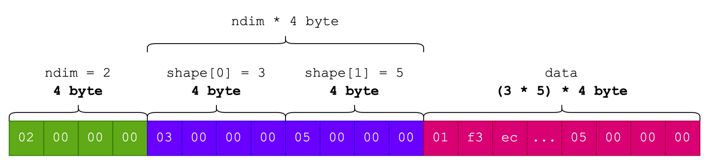
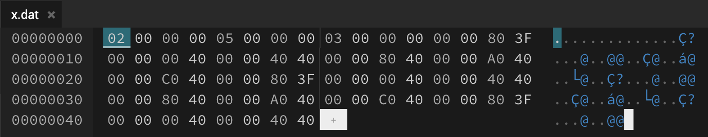

Dunia ideal saya soal machine learning deployment adalah distribusi seminimal mungkin. Minimal dua file: file executable dan file berisi parameter model yang sudah dilatih. Cara mainstream adalah distribusikan proyek berikut dengan interpreter Python.
Membuat pustaka NN lengkap yang mengakomodasi proses latih dan inferensi.
Untuk melatih model, pustaka modern menyediakan fitur autograd, yaitu pengihtungan gradien otomatis. Ini berguna untuk memperbarui paramter model selama proses belajar. Selain itu, proses komputasi juga harus cepat. Ini membutuhkan optimasi di sana-sini, yang membutuhkan upaya yang sangat... monumental.
Objektif proyek:
Ekspor parameter model NN (baik pretrained maupun hasil latih sendiri), muat dalam program C, gunakan untuk inferensi.
Pertanyaan yang pasti muncul:
Mengapa C? Bukankah Julia bisa? Bukanlah Rust juga bisa?
Model NN, sekecil atau sebesar apapun itu, hanyalah seonggok angka-angka yang hanya berguna dengan operasi aritmatika. Suatu model NN dengan satu hidden layer $relu(\mathbf{x}\mathbf{w}_1+\mathbf{b}_1)\mathbf{w}_2+\mathbf{b}_2$
from torch.nn import Sequential, Linear, ReLU
model = Sequential(
Linear(3, 5),
ReLU(),
Linear(5, 2),
)
print(model)
""" Output:
Sequential(
(0): Linear(in_features=3, out_features=5, bias=True)
(1): ReLU()
(2): Linear(in_features=5, out_features=2, bias=True)
)
"""
print(model[0].weight.detach().numpy(), "\n")
print(model[0].bias.detach().numpy(), "\n")
print(model[2].weight.detach().numpy(), "\n")
print(model[2].bias.detach().numpy(), "\n")
""" Output:
[[-0.05593944 0.45469582 0.28000206]
[ 0.3861447 -0.25333872 -0.46768567]
[-0.25107583 -0.17574829 -0.46110478]
[ 0.3162706 0.3284096 -0.5111614 ]
[ 0.36777872 0.38549262 0.45413244]]
[ 0.4335612 0.53432095 -0.5666646 0.50835824 0.46640122]
[[ 0.2071963 0.18049729 0.44086027 0.39566457 -0.22345108]
[ 0.22607613 0.33495134 0.27171385 -0.00866625 -0.2844745 ]]
[0.3454901 0.0193561]
"""
Seluruh informasi tensor yang dibutuhkan akan disimpan sebagai byte array.
Sebagai ilustrasi, kita memiliki tensor (np.ndarray) berdimensi 2 (atau x.ndim == 2) dan ukuran $3 \times 5$ (atau x.shape == (3, 5)).
Penataan data tensor tersebut dalam format byte array adalah sebagai berikut:
ndim) yang direpresentasikan dengan integer (4 byte). Maka, 4 byte pertama pada byte array digunakan untuk menyimpan ndim bernilai 2.Berikut ini ilustrasinya:

Penataan metadata dan data tensor
Kita bisa dengan mudah melakukan hal ini dengan NumPy seperti berikut ini.
import numpy as np
from io import BufferedWriter
def dump_ndarray(x: np.ndarray, f: BufferedWriter):
x = np.ascontiguousarray(x, dtype=np.float32)
# Secara berurutan, tuliskan ndim, shape, data tensor
np.array(x.ndim, dtype=np.int32).tofile(f)
np.array(x.shape, dtype=np.int32).tofile(f)
f.write(x.tobytes())
x = np.array(
[[1, 2, 3],
[4, 5, 6],
[1, 2, 3],
[4, 5, 6],
[1, 2, 3]]
)
with open("x.dat", "wb") as f:
dump_ndarray(x, f)
Tipe data np.int32 (setara dengan int pada C) dan np.float32 (setara dengan float pada C) sama-sama berukuran 4 byte. Secara default numpy menggunakan big endian untuk urutan byte.
Jika x.dat dibuka dengan hex editor, maka kontennya kurang lebih akan seperti ini:

Saya pikir, pustaka tensor seperti PyTorch dan NumPy memiliki tiga komponen utama: data, bentuk, dan jumlah dimesi. Operasi-operasi seperti parkalian matriks dan konvolusi dapat dilakukan cukup dengan mengetahui ketiganya. Berikut ini cara saya merepresentasikan struktur data tensor pada C:
#define NNRT_FLOAT float
typedef struct {
NNRT_FLOAT *data;
int *shape;
int ndim;
} nnrt_Tensor;
nnrt_Tensor *nnrt_tensor_fread(FILE *fp) {
nnrt_Tensor *tensor = (nnrt_Tensor *)malloc(sizeof(nnrt_Tensor));
fread(&tensor->ndim, sizeof(int), 1, fp);
tensor->shape = (int *)malloc(tensor->ndim * sizeof(int));
fread(tensor->shape, sizeof(int), tensor->ndim, fp);
size_t sz = nnrt_tensor_size(tensor);
tensor->data = (NNRT_FLOAT *)malloc(sz * sizeof(NNRT_FLOAT));
fread(tensor->data, sizeof(NNRT_FLOAT), sz, fp);
return tensor;
}
Setelah mekanisme memuat tensor di C sudah dibuat, yang tersisa (banyak) selanjutnya adalah membuat fungsi-fungsi untuk kebutuhan inferensi.
Sebelumnya, saya akan membuat classifier sederhana menggunakan MLPClassifier dari pustaka scikit-learn.
MLPClassifier adalah kelas untuk membuat fully-connected NN dengan mudah.
from sklearn.datasets import load_iris
from sklearn.neural_network import MLPClassifier
from sklearn.preprocessing import MinMaxScaler
from dump import dump_ndarray_list
def dump_ndarray_list(ndarray_list: List[np.ndarray], filename: str) -> None:
with open(filename, "wb") as f:
for x in ndarray_list:
dump_ndarray(x, f)
x, y = load_iris(return_X_y=True)
y = y.ravel()
x = MinMaxScaler().fit_transform(x)
# MLP dengan 2 hidden layer
clf = MLPClassifier(hidden_layer_sizes=(100, 20), max_iter=1000).fit(x, y)
# clf.coefs_ adalah list yang berisi 3 ndarray, 2 untuk parameter hidden layer
# dan 1 untuk parameter output layer.
# clf.intercepts_ juga list berisi 3 ndarray untuk bias.
all_params = clf.coefs_ + [i.reshape(1, -1) for i in clf.intercepts_]
# Kita ekspor semua tensor secara sekuensial, semua data tensor
# saling bersebelahan
dump_ndarray_list(all_params, "mlp.dat")
Parameter yang sudah dilatih disimpan pada atribut coefs_ (bobot $\mathbf{w}$) dan intercept_ (bias $\mathbf{b}$).
Semuanya bertipe np.ndarray.
Keuntungan fungsi dump_ndarray() dia atas adalah, selama tensor (dari pustaka apapun) berupa np.ndarray atau setidaknya bisa dikonversi menjadi np.ndarray, kita bisa mengekspornya.
Ini termasuk model MLPClassifier
#include <stdio.h>
#include <stdlib.h>
#include <string.h>
#include "../nnrt.h"
int main(void) {
// Sample of min-max scaled of iris dataset
float x_data[] = {
0.22222222, 0.62500000, 0.06779661, 0.04166667, // -> 0
0.16666667, 0.41666667, 0.06779661, 0.04166667, // -> 0
0.61111111, 0.41666667, 0.71186441, 0.79166667, // -> 2
0.52777778, 0.58333333, 0.74576271, 0.91666667 // -> 2
};
nnrt_Tensor *x = nnrt_tensor_alloc(2, (int[]){4, 4});
memcpy(x->data, x_data, 16 * sizeof(float));
// Load trained parameters
char *filename = "mlp.dat";
FILE *fp = fopen(filename, "rb");
if (!fp) {
printf("Cannot load weight\n");
exit(1);
}
nnrt_Tensor *w1 = nnrt_tensor_fread(fp);
nnrt_Tensor *w2 = nnrt_tensor_fread(fp);
nnrt_Tensor *w3 = nnrt_tensor_fread(fp);
nnrt_Tensor *b1 = nnrt_tensor_fread(fp);
nnrt_Tensor *b2 = nnrt_tensor_fread(fp);
nnrt_Tensor *b3 = nnrt_tensor_fread(fp);
fclose(fp);
// Hidden layer 1
nnrt_Tensor *h1 = nnrt_tensor_alloc(2, (int[]){4, 100});
nnrt_affine(x, w1, b1, h1);
nnrt_relu(h1, h1);
// Hidden layer 2
nnrt_Tensor *h2 = nnrt_tensor_alloc(2, (int[]){4, 20});
nnrt_affine(h1, w2, b2, h2);
nnrt_relu(h2, h2);
// Output layer
nnrt_Tensor *out = nnrt_tensor_alloc(2, (int[]){4, 3});
nnrt_affine(h2, w3, b3, out);
nnrt_relu(out, out);
//// optionally, calculate softmax
// nnrt_softmax(out, 1, out);
// Get labels
nnrt_Tensor *lbl = nnrt_tensor_alloc(2, (int[]){4, 1});
nnrt_argmax(out, 1, lbl);
printf("Labels:\n");
for (size_t i = 0; i < 4; i++)
printf("%f\n", lbl->data[i]);
// Free params
nnrt_tensor_free(x);
nnrt_tensor_free(w1);
nnrt_tensor_free(w2);
nnrt_tensor_free(w3);
nnrt_tensor_free(b1);
nnrt_tensor_free(b2);
nnrt_tensor_free(b3);
// Free intermediary variables
nnrt_tensor_free(h1);
nnrt_tensor_free(h2);
nnrt_tensor_free(out);
nnrt_tensor_free(lbl);
return 0;
}
■────────────────────────────────────────────────────────────────────■ │ │ │ Copyright 2014-2024 Aria Ghora Prabono. Any and all opinions │ │ listed here are personal unless stated otherwise. │ │ │ ■────────────────────────────────────────────────────────────────────■